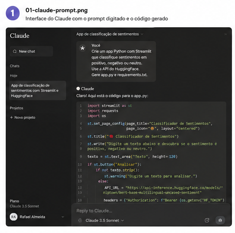
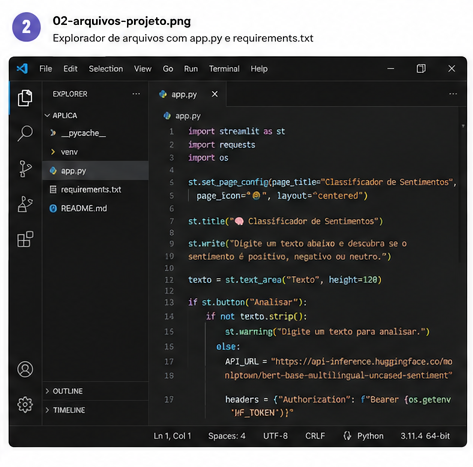
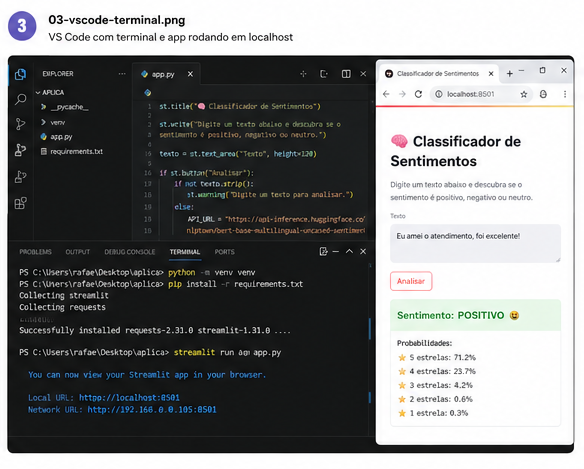
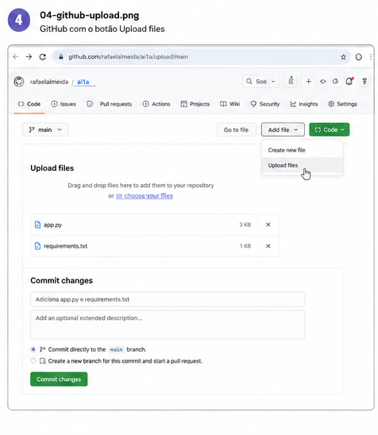
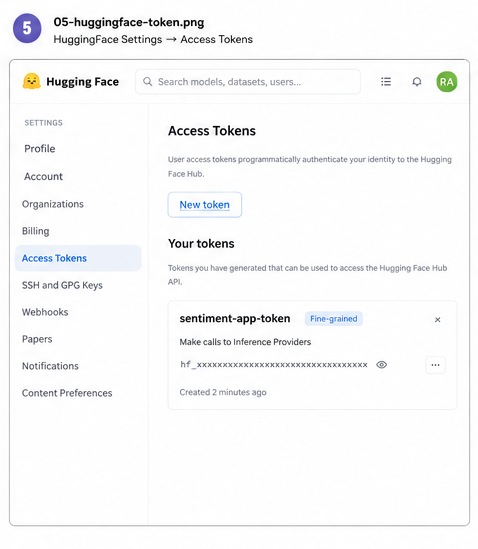
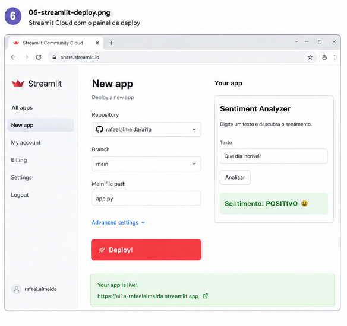

Tudo começa com uma instrução em linguagem natural para a IA. Não é necessário saber programar para dar o primeiro passo — você descreve o que quer e a IA entende.
Um bom prompt especifica: o tipo de aplicativo, a tecnologia desejada, a função principal e o formato de saída esperado.
"Crie um app Python com Streamlit
que classifique sentimentos em
positivo, negativo ou neutro.
Use a API do HuggingFace.
Gere app.py e requirements.txt."

A IA entrega o código completo. Você copia e salva em dois arquivos na sua pasta de projeto:
- 1 Crie a pasta do projeto:
aplica/ - 2 Salve o código Python como
app.py - 3 Salve as dependências como
requirements.txt
streamlit>=1.32.0 requests>=2.31.0

Abra a pasta no VS Code e execute os comandos no terminal integrado (Ctrl + `):
# 1. Cria ambiente virtual python -m venv venv # 2. Ativa o ambiente venv\Scripts\activate # Windows source venv/bin/activate # Mac/Linux # 3. Instala dependências pip install -r requirements.txt # 4. Roda o app streamlit run app.py
streamlit run app.py --server.port 8502

O GitHub é o repositório remoto que guarda seu código e conecta ao serviço de deploy. Você pode subir os arquivos diretamente pela interface web — sem precisar do Git instalado.
- 1 Acesse github.com e entre na sua conta
- 2 Abra o repositório (ex:
ai1a) - 3 Clique em Add file → Upload files
- 4 Arraste
app.pyerequirements.txt - 5 Clique em Commit changes

O app usa o modelo XLM-RoBERTa multilíngue do HuggingFace — funciona em português, inglês e espanhol. Para chamá-lo via API, você precisa de um token gratuito.
- 1 Acesse huggingface.co e crie uma conta gratuita
- 2 Clique na foto → Settings
- 3 Menu esquerdo: Access Tokens
- 4 Clique em New token → tipo Fine-grained
- 5 Marque "Make calls to Inference Providers"
- 6 Copie o token (começa com
hf_...)

O Streamlit Community Cloud é gratuito, conecta direto no GitHub e publica o app em minutos — sem servidor, sem cartão de crédito.
- 1 Acesse share.streamlit.io
- 2 Clique em New app
- 3 Selecione o repositório GitHub e o arquivo
app.py - 4 Clique em Deploy!
- 5 Quando o app abrir, cole o token
hf_...no campo

O app não carrega nenhum modelo de IA localmente — isso consumiria ~2GB de memória RAM. Em vez disso, ele chama a API do HuggingFace e recebe o resultado pronto.
O modelo usado é o XLM-RoBERTa, uma rede neural Transformer treinada em 8 idiomas incluindo o português. Diferente do VADER (dicionário inglês), ele compreende o contexto real das frases.
XLM-RoBERTa → rede neural profunda, multilíngue, muito mais preciso
app.py
Inference Providers
🎉 App online e funcional
Qualquer pessoa com o link pode acessar pelo celular ou computador — sem instalar nada.
~3 minutos
R$ 0,00
PT · EN · ES
cada push